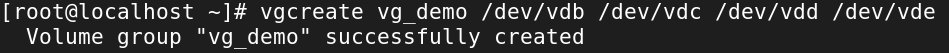
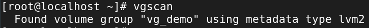
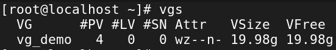
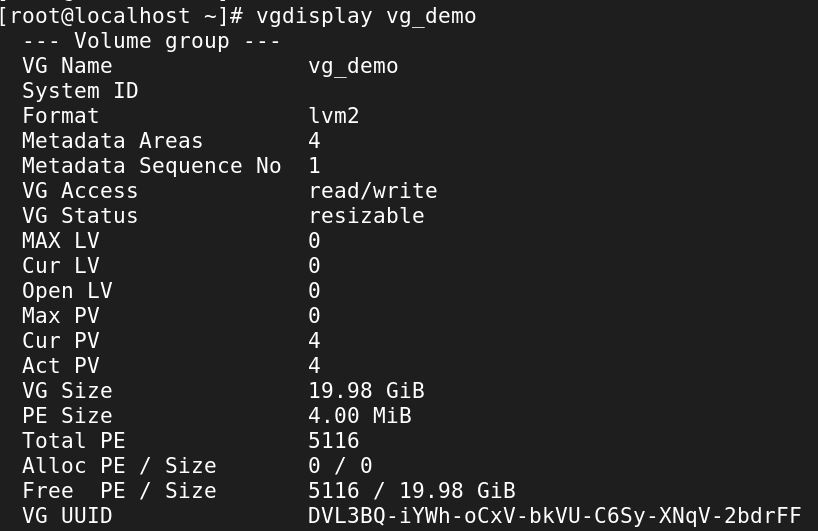
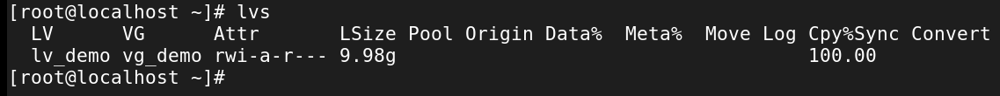
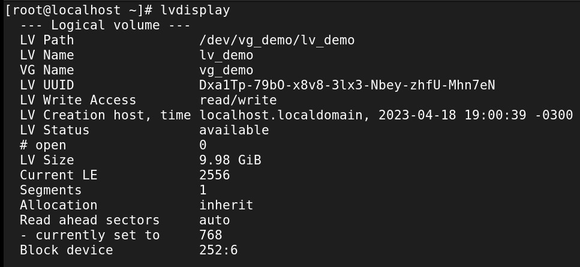
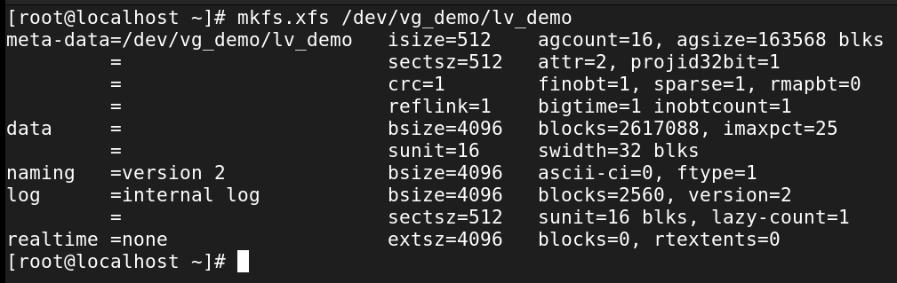

Logical Volume Management Basics
While adding a disk directly works fine, that approach doesn’t scale well in enterprise environments. Big systems need flexibility: adding, resizing, moving, or even migrating storage without reformatting everything.
That’s where Logical Volume Management (LVM) shines. At its core, LVM is built around three building blocks:
- Physical Volumes (PVs) → actual disks (or partitions) you feed into LVM
- Volume Groups (VGs) → pools of storage made from PVs
- Logical Volumes (LVs) → slices of the pool, presented to Linux as usable disks
Think LEGO bricks: PVs are the raw bricks, VGs are the big bucket you dump them into, and LVs are the custom shapes you build from that bucket. Quality engineering, not fast-food assembly. 🧱
Demo OS: Rocky Linux
This demo uses Rocky Linux (RHEL9 downstream). Everything here is done
as root — which is typical for storage work.
Add New Disks
The setup is the same as in Adding Storage. The only difference: LVM makes the most sense when you’ve got multiple disks to play with.
In this demo, we’ll use four 5GiB disks, combined with RAID5 for redundancy (RAID is its own big topic, but redundancy means “safer data” 👍).

Create a New Physical Volumes (PVs)
Our four new disks (vdb, vdc, vdd, vde) show up in lsblk. Before
LVM can use them, we convert them into physical volumes:

You could run pvcreate once per disk, but batching them is faster. Check
what PVs exist:

Or inspect details for one:

Create a Volume Group (VG)
Now, we pool those PVs into a volume group. This becomes our central storage bucket.
# vgcreate <nameOfVolumeGroup> <disksToAdd>
vgcreate vg_demo /dev/vdb /dev/vdc /dev/vdd /dev/vde

From here: - Add/remove disks as PVs - Create/remove logical volumes from the pool
Some useful VG commands:

List volume groups with vgs:

List information about a specific volume group with vgdisplay <volumeGroup>:

Create a Logical Volume (LV)
Now for the fun part: carve out an LV from the VG.
In this demo, we’ll:
- Use RAID5
- Allocate 50% of the VG’s free space
- Name it lv_demo
#lvcreate --type <asRequired> -l <size> -n <lvName> <vgName>
lvcreate --type raid5 -l 50%FREE -n lv_demo vg_demo
Explore existing LVs with lvs:

And lvdisplay:

Make a File System on the Logical volume
Logical volumes are block devices, just like disks. They need a filesystem before use.
By default, they live under /dev/<VG>/<LV>. Format with mkfs:

Then create a mount point - mkdir /lvmDemo.
Permanently Mount the Logical Volume
Check the UUID of the LV:

Append its UUID to /etc/fstab safely:
#blkid -s UUID -o value <location of LVM under /dev/mapper>
blkid -s UUID -o value /dev/mapper/vg_demo-lv_demo >> /etc/fstab

Append, Don't Overwrite!
Always back up /etc/fstab before editing. And double-check the output
before appending.
The new line in /etc/fstab should look like:

Validate
Run:

Test it by creating files:

Set Permissions
Right now, the LV is owned by root. Adjust ownership/permissions so
other users can use it — see
Basic Linux Permissions.
Finally, reboot to confirm everything survives startup.
🎉 Congrats — you’ve just built a flexible, enterprise-grade storage setup with LVM.